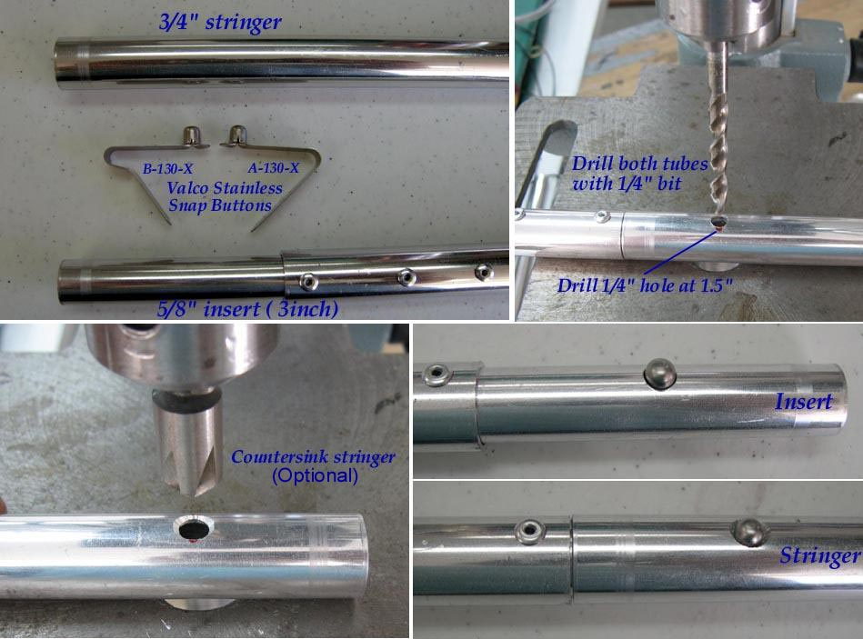

| Sea Glider | Menu Last Page Next Page |
|

Stainless snap buttons connect each insert and stringer tube and keep the frame aligned during assembly. Tape can be used instead, but it is a slower process.
Snap Buttons (Commercial) - Stainless steel snap buttons can be purchased from Valco (US). Order A-130-X or B-130-X snap buttons at $0.49ea with a $50 minimum. The X indicates stainless steel. You can download their catalog. Use the {Back} key to return from the link. |
|